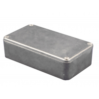

Project template containing the recommended board layout for Hammond Manufacturing 1590Q:
Black: 1590WQFLBK - HM3751-ND
Unpainted: 1590WQFL - HM3752-ND
Black: 1590WQFBK - HM3750-ND
Unpainted: 1590WQF - HM3753-ND
Black: 1590WQBK - HM3749-ND
Unpainted: 1590WQ - HM953-ND
Black: 1590QFLBK - HM3647-ND
Unpainted: 1590QFL - HM950-ND
Black: 1590QFBK - HM3646-ND
Unpainted: 1590QF - HM3648-ND
Black: 1590QBK - HM1932-ND
Unpainted: 1590Q - HM949-ND
|  |
|
The "Dwgs.User" layer contains all critical dimmensions in milimeters[inches].
The "Edge.Cuts" layer contains the maximum board outline and holes to align with board standoffs.
PCB Preview: